Selection and Score algorithms¶
Selection and Data preparation¶
(wtoAlgorithm.WtoAlgorithm.selector())
Calculate observability using the pyephem libraries.
For all the science field sources of an SB and fixed calibration sources, we calculate the current elevation, rise LST and set LST. If a field source is a Solar System object, or an ephemeris source, we calculate first the current RA and DEC, and then the other parameters. The current elevation for the SB comes from the source with the minimun elevation; the rise LST for the SB is the LST of the source that would rise last; and the set LST for the SB is the LST of the source that would set first. The rise and set LST are calculated using the elevation limit (horizon) gave as an input for gWTO.
Relavant XML child/tag or gWTO2 variables:
- SchedBlock.FieldSource[‘solarSystemObject’]
- SchedBlock.FieldSource.sourceCoordinates.longitude
- SchedBlock.FieldSource.sourceCoordinates.latitude
- SchedBlock.FieldSource.isQuery
- SchedBlock.FieldSource.sourceEphemeris
- Date, horizon limit.
Select SB by array type: 12m, 7m, TP.
Relavant XML child/tag or gWTO2 variables:
- SchedBlock.ObsUnitControl[‘arrayRequested’]
- Array Type.
Calculate opacity, airmass and sky Temperature.
For both the OT asumed conditions and current, actual, conditions, based on the current PWV.
The implementation has several steps:
- First, a table with values of Tau as fuction of PWV and representative frequencies was created. The file with this tables, in csv format, is called tau.csv. The frequencies are between 84.0 and 720.0 GHz, with steps of 100 MHz; pwv values are between 0.0 and 20.0 mm, in steps of 0.05. The values were calculated using the atmosphere model algorithms from CASA 4.2.1, using as input variables , , 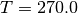, 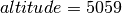 and 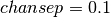.
- A table with Tsky values as function of PWV and representative frequencies was also create. The file with this table, in csv format, is called tskyR.csv. Description of columns, rows, and values is the same as the table tau.csv, the only addition, is that the Tsky in the tables assumes the airmass of a source at Zenith.
- Internaly, four columns are created for all SBs: tau_org and tsky_org, storing the value of tau and tsky for the conditions assumed by the OT, i.e., pwv from maxPWVC; tau and tsky, storing the values of tau and tsky for the current conditions, i.e., pwv from the gui’s PWV variable.
Relavant XML child/tag or gWTO2 variables:
- SchedBlock.Preconditions.WeatherConstraints.maxPWVC
- SchedBlock.SchedulingConstraints.representativeCoordinates.latitude
- SchedBlock.SchedulingConstraints.representativeFrequency
- Date, current PWV
- Tsky and Tau tables.
Calculate system Temperatures.
Two columns are genrated for each SB: tsys_org and tsys, one for the OT’s assumed conditions and the other for the current conditions. Tsys, for both cases, is calculated using:
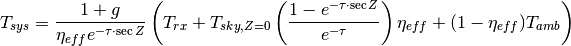
Where
 is the sideband gain ratio (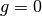 for SSB and 2SB
receivers, 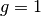 for DSB); 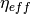 is the forward efficiency,
which is set to a value of 0.95; 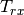 is the receiver characteristic
temperature;
is the sideband gain ratio (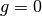 for SSB and 2SB
receivers, 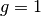 for DSB); 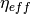 is the forward efficiency,
which is set to a value of 0.95; 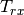 is the receiver characteristic
temperature;  is the oppacity for a source at zenithal distance
;
is the oppacity for a source at zenithal distance
;  is the zenithal distance of the representative source
at transit: 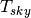 is the sky temperature at ; and
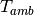 is the ambient temperature, set to a fixed value of
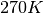.
is the zenithal distance of the representative source
at transit: 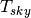 is the sky temperature at ; and
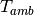 is the ambient temperature, set to a fixed value of
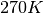.Relavant XML child/tag or gWTO2 variables:
- SchedBlock.SchedulingConstraints.requiredReceiverBands
SBs within spectral ranges with transmission higher than 50% are first selected.
For gWTO1, we use to have a limit of 70%, which change to 50% when the pwv was under 0.6 mm. For gWTO2 we set the limit to 50%, and a more accurate selection is applied later using 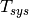 The transmission is calculated from the previously found 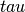 for the current conditions:
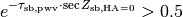
where 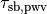 is the oppacity for the representative source of a scheduling block sb and with the current PWV 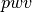; and 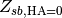 is the zenithal distance for the representative source of sb at transit.
Relavant XML child/tag or gWTO2 variables:
Select SBs within given HA limits.
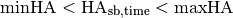
(mihHA = -5 and maxHA = 3 by default).
Relavant XML child/tag or gWTO2 variables:
- LST
Select SBs over the given elevation limit (20 deg. default) and that won’t set for at least 1 1/2 hours.
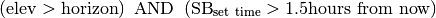
Relavant XML child/tag or gWTO2 variables:
- LST
- Horizon Limit
- SB set time
Remove SBs with states Phase2Submitted, FullyObserved and Deleted.
Relavant XML child/tag or gWTO2 variables:
- This information comes from the ALMA.SCHED_BLOCK_STATUS.
Remove SBs that belongs to projects with status Phase2Submitted or Completed.
Relavant XML child/tag or gWTO2 variables:
- This information comes from the ALMA.OBS_PROJECT_STATUS, and is crosschecked against ALMA.BMMV_OBSPROJECT
Remove SBs that have names like “Do not”.
Currently the OT is not able to handle the SB status “Deleted”, so SBs that are supposed to be deleted are set to status “Suspended”, and the name changed to a varation of “DO NOT OBSERVE”, “Do_not_observe”, “DO not observe descoped”, etc., depending on the mood of the P2G. The only thing in common is the presence of a “do not”. Any SB with those words in the name is removed.
Relavant XML child/tag or gWTO2 variables:
- SchedBlock.name
Remove SBs where the number of requested executions has been achieved
Given the requested number of executions of a SB (executionCount), check if any EB are associated to this SB, and add up the ones with QA0 flags Unset and Pass. If this last number is equal or higher than executionCount we don’t select the SB.
When a QAO Unset flag is set to Fail or Semipass, the number of assoc. EB will go down, and then an SB can be back on the list. This method avoids over-observing of an SB.
Relavant XML child/tag or gWTO2 variables:
- SchedBlock.SchedBlockControl.executionCount
- QA0STATUS column FROM ALMA.AQUA_EXECBLOCK
Select SBs that can be executed with the current array’s angular resolution
Using the minAR and maxAR limits, corrrected by Stéphane’s script and transformed to the equivalent AR at 100GHz, we select SBs that would accept current array’s configuration as set in Array AR::
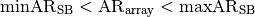
Relavant XML child/tag or gWTO2 variables:
- SchedBlock.SchedulingConstraints.minAcceptableAngResolution
- SchedBlock.SchedulingConstraints.maxAcceptableAngResolution
- minAR, maxAR, Stéphane’s script
- Array AR:
Calculate tsysfrac, blfrac and frac columns
Three new variables are calculated for each SB, that will help to do a final selection and assign scores. tsysfrac is the multiplicative factor the science target integration time should be corrected by, so given the current weather conditions (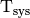,
)
the execution would achieve the requested sensitivity: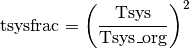
blfrac is the multiplicative factor the science target integration time should be corrected by to account for differences between current array’s characteristics (, ) and requested array:
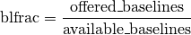
The offered_baselines will depend on Cycle (32 for cycle 1, 34 for cycle 2).
Finally, frac is the total multiplicative factor accounting for both previous factors:
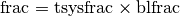
Score and ranking¶
SB completion score
A score between 4 and 10, where 4 is given to SBs that has not been started yet, and it rises as the SB gets closer to completion.
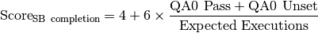
SB Grade/Cycle Score
(1)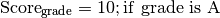
(2)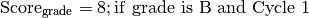
(3)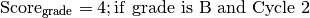
(4)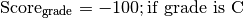
SB Science Score
SB Array Score
(5)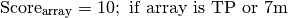
(6)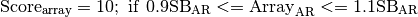
(7)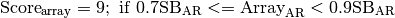
(8)
(9)
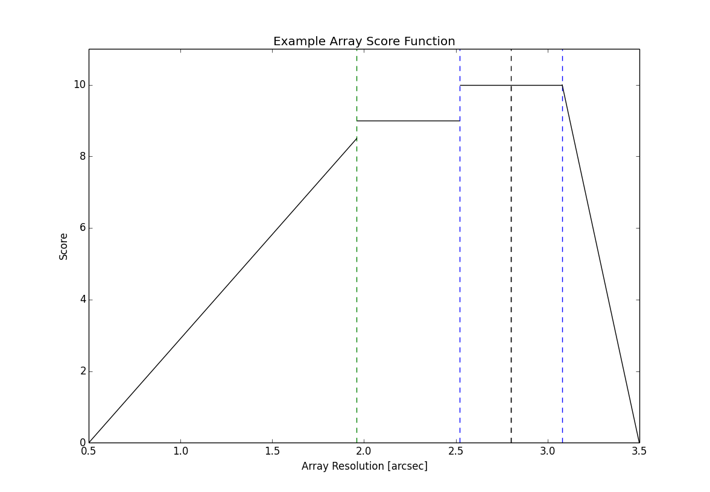In this example, the requested array resolution (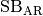) is 2.8 arcsec, with a minimun acceptable resolution 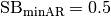 and maximum 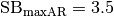
SB Executive Score
(10)
SB Condition Score
(11)
(12)
(13)

SB Total Score
{kind=link}